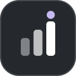

Opens in Tableau 2026.2

Figma to Tableau
Design once.
Generate in
Tableau.
Name your layers, hit export, and a real .twbx downloads —
layout, worksheets, KPIs, filters and navigation already wired.
.twbx export
Pixel-faithful
No rebuilding
Figma frame
KPI/Revenue
FILTER/Region
Nav/Detail →